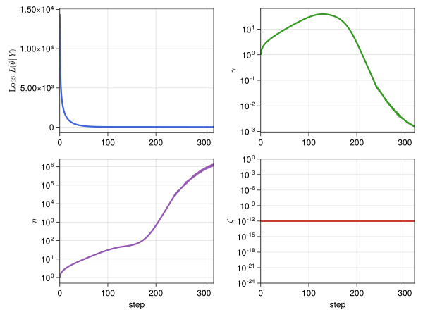

Fast Gaussian Processes
See the Tutorial for instructions on how to use this package.
FastGaussianProcesses.jl implements fast construction of Gaussian Process surrogates by matching shift invariant kernels to quasi-random (low discrepancy) sampling locations. For a standard GP fit to $n$ points, computing the posterior mean and variance costs $\mathcal{O}(n^3)$. For a Fast GP, these cost only $\mathcal{O}(n \log n)$. Note that Fast GPs require control of sampling locations.
This package is compatible with two flavors of quasi-random sequences: Lattice rules and digital sequences, both implemented in base 2. Sequence generators are implemented in QMCGenerators.jl.
Example
Below $m_n$ is the posterior mean, $\sigma_n^2$ the posterior variance, and
\[f(x) = ???.\]

References
Rathinavel, J. (2019). Fast automatic Bayesian cubature using matching kernels and designs. Illinois Institute of Technology.
Jagadeeswaran, R., & Hickernell, F. J. (2019). Fast automatic Bayesian cubature using lattice sampling. Statistics and Computing, 29(6), 1215-1229.
Kaarnioja, V., Kuo, F. Y., & Sloan, I. H. (2023). Lattice-based kernel approximation and serendipitous weights for parametric PDEs in very high dimensions. arXiv preprint arXiv:2303.17755.
Rasmussen, C. E., & Williams, C. K. (2006). Gaussian processes for machine learning (Vol. 1, p. 159). Cambridge, MA: MIT press.